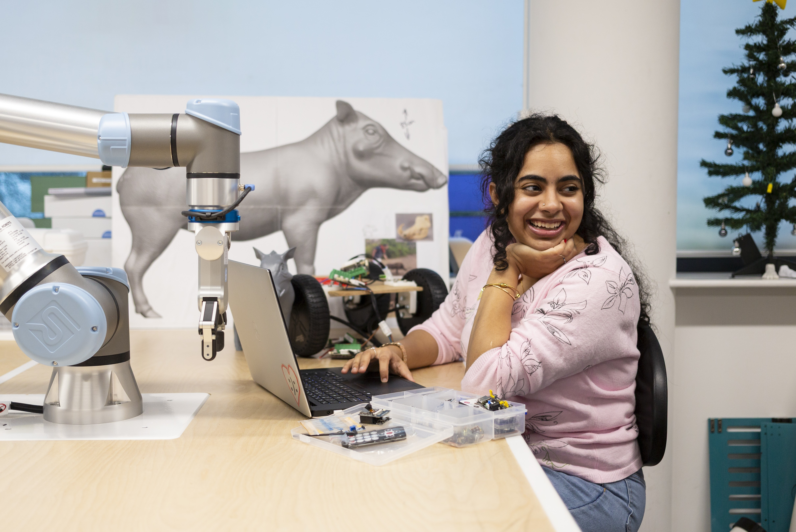
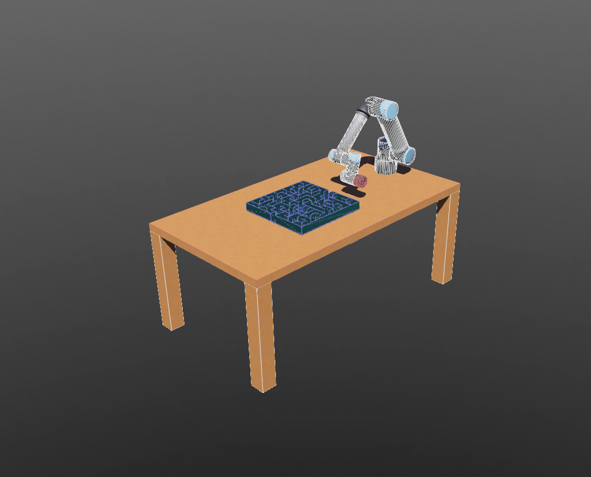
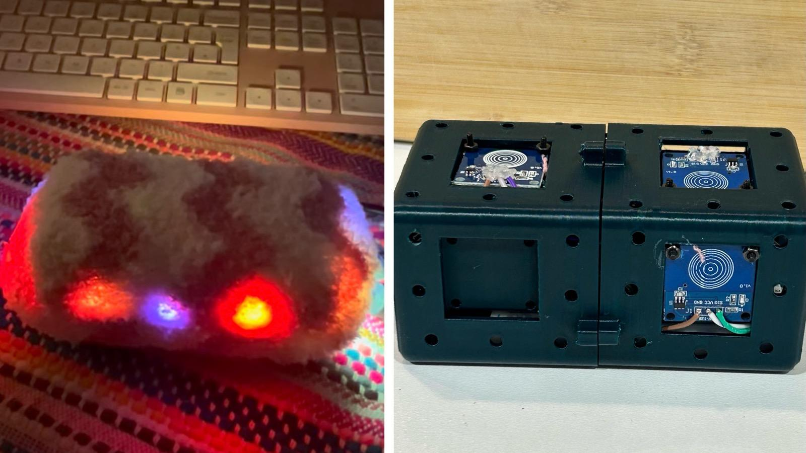
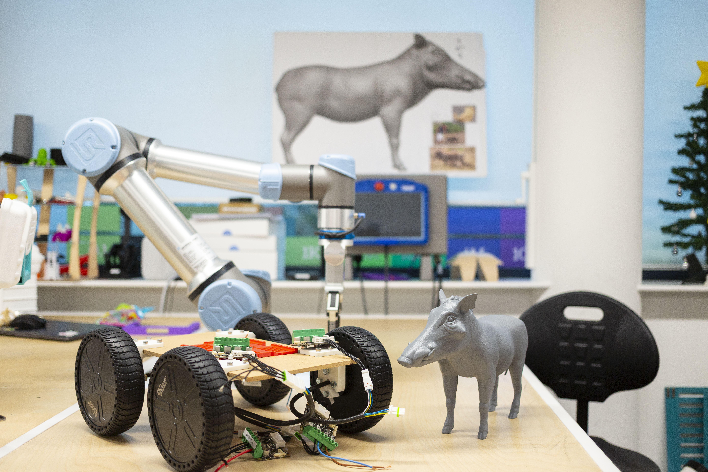

Robotics researcher and engineer passionate about pushing the boundaries of autonomous systems and sustainable technology. Committed to R&D that bridges the gap between intelligent machines and real-world impact. Currently completing my BSc in Robotics at Falmouth University, with ambitions to pioneer the next generation of responsible, adaptive robotics.

I am a final year Robotics Engineering student with hands-on expertise in ROS2, reinforcement learning, computer vision, and hardware/software integration. My passion lies in research and development, designing intelligent systems that bridge the gap between cutting-edge AI and real-world robotics.
From gesture-controlled robotic arms to RL-driven autonomous platforms, my work spans the full development pipeline. I am particularly drawn to projects where engineering and research intersect, building technology that is not only intelligent but purposeful and sustainable.
My dissertation explores AI-driven robotic control, simulating a UR7e robotic arm navigating narrow mazes in Gazebo using Q-Learning and PPO, benchmarking autonomous performance against human operation.
Based in Falmouth, UK. Indian citizen, actively seeking graduate opportunities and open to EP sponsorship and international relocation.
Designed and built a 3-DOF robotic arm controlled via real-time hand-gesture tracking, converting live pose data into low-latency motor commands. Full mechanical structure engineered in Fusion 360.

Dissertation project: RL-based control for a UR7e navigating narrow mazes in Gazebo. Benchmarks AI autonomous performance vs. human control to advance sim-to-real manipulation research.

Soft, personalised companion robot that adapts movement, sound, and haptic responses via RL. Embedded touch & proximity sensors drive a behaviour policy that learns individual interaction patterns.

Ruggedised animatronic field robot for research in Africa — integrating high-torque ODrive actuators, Raspberry Pi, and radio remote operation. Powered scissor-lift for payload transport.
Built a hardware/software prototype to automate part of an internal imaging workflow (NDA). Extended into a part-time role contributing to sensor integration, iterative design, and testing in a fast-paced R&D environment.
Mentored a team of ambassadors, led planning of open days and campus events. Communicated complex engineering programmes to prospective students, parents, and industry partners.
Elected peer representative liaising between students and faculty. Managed Robotics Society operations — coordinating technical workshops, project showcases, and cross-disciplinary networking events.
Seeking for full-time roles, internships, and research oppurtunities. Available for EP sponsorship & relocation.